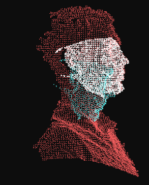
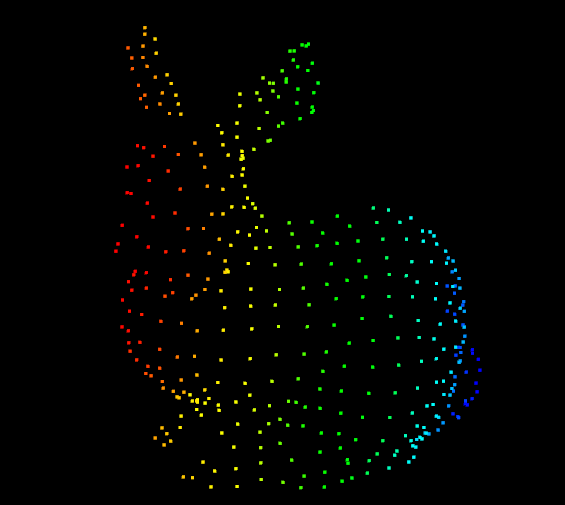
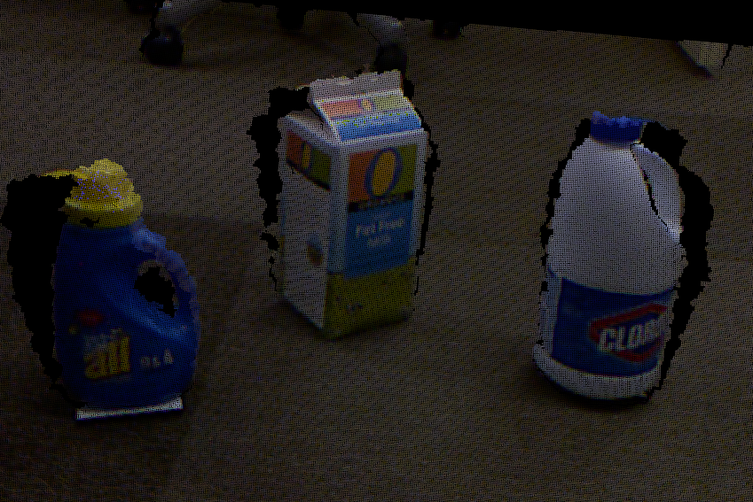
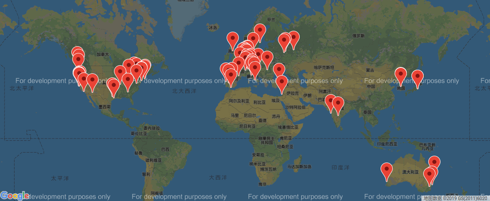
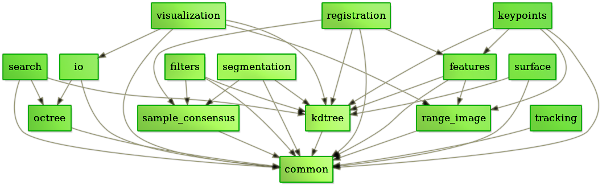
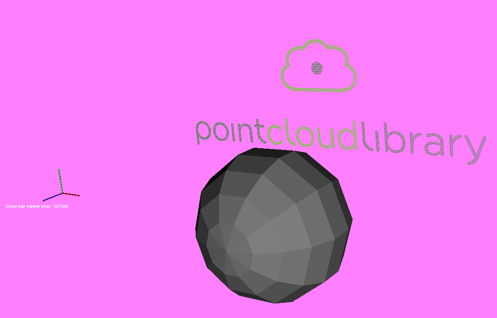
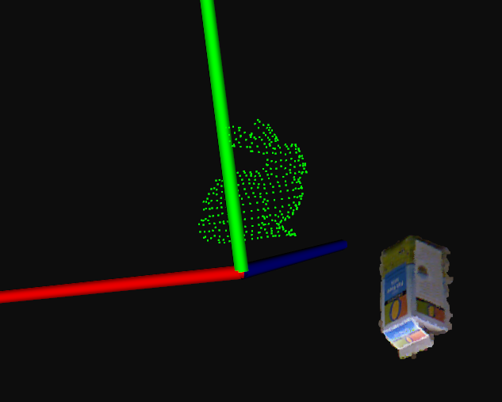
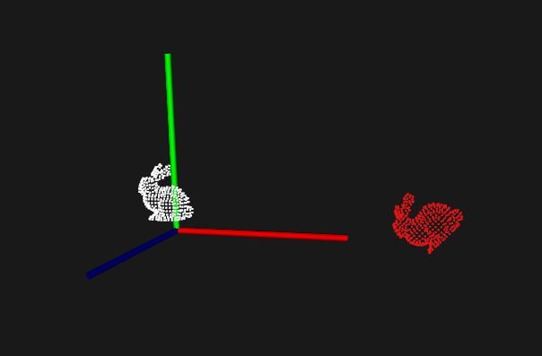

01-点云及其可视化¶
概述¶
点云Point Cloud是三维空间中，表达目标空间分布和目标表面特性的点的集合，点云通常可以从深度相机中直接获取，也可以从CAD等软件中生成。点云是用于表示多维点集合的数据结构，通常用于表示三维数据。在3D点云中，这些点通常代表采样表面的X，Y和Z几何坐标。当存在颜色信息时（请参见下图），点云变为4D。
三维图像有以下几种表现形式：深度图（描述物体与相机的距离信息），几何模型（由CAD等软件生成），点云模型（逆向工程设备采集生成）
一些常见的点云图如下：
- 人的侧脸3D

- 一只兔子3D

- 桌子及牛奶4D

PCL（Point Cloud Library）是用于2D / 3D图像和点云处理的大型开源跨平台的C++编程库。 PCL框架实现了大量点云相关的通用算法和高效的数据结构。内容涉及了点云的获取、滤波、分割、配准、检索、特征提取、特征估计，表面重建、识别、模型拟合、追踪、曲面重建、可视化等等，这些算法可用于从嘈杂的数据中过滤出异常值，将3D点云缝合在一起，分割场景的部分区域，提取关键点并计算描述符，根据物体的几何外观识别实际物体，创建表面点云并将其可视化。支持多种操作系统，可以在Windows、Linux、MacOS X、Android、部分嵌入式实时系统上运行。
如果说OpenCV是2D信息获取与处理的结晶，那么PCL就在3D信息获取与处理上也具有相同的地位。相比图像数据，点云数据多了一个维度，因此能够更全面的刻画三维场景中的对象。随着智能机器人，包括机械臂，无人汽车，无人机，服务机器人等快速普及和应用，点云处理及其背后的3D视觉，正在成为一个越来越重要且越来越活跃的领域。
此外，PCL是BSD授权方式，可以进行完全免费的商业和学术应用。
PCL的起源与发展¶
PCL 起初是 ROS(Robot Operating System )下由来自斯坦福大学的年轻博士Radu等人维护和开发的开源项目。主要应用于机器人研究应用领域，随着各个算法模块的积累，于 2011 年独立出来，正式与全球 3D信息获取处理的同行一起，组建了强大的开发维护团队，以多所知名大学、研究所和相关硬件、软件公司为主。截止目前 , 发展非常迅速,不断有新的研究机构等加入,在 Willow Garage，Nvidia, Google, Toyota, Trimble, Urban Robotics, Honda Research Institute 等多个全球知名公司的资金支持下，不断提出新的开发计划,代码更新非常活跃 , 至今（2019年10月）从 1.0 版本已经发布到 1.9.1 版本。
该项目是由来自许多不同组织的众多工程师和科学家开发的，分布在世界各地，包括：

- 相关链接：
PCL-Demo¶
-
配置根目录CMakeLists.txt
cmake_minimum_required(VERSION 3.14) project(PCLDemo) set(CMAKE_CXX_STANDARD 14) # 设置输出根目录为build/Debug set(OUTPUT_DIRECTORY_ROOT ${CMAKE_CURRENT_SOURCE_DIR}/build/${CMAKE_BUILD_TYPE}) # 设置可执行程序输出到build/Debug/bin目录 set(CMAKE_RUNTIME_OUTPUT_DIRECTORY "${OUTPUT_DIRECTORY_ROOT}/bin" CACHE PATH "Runtime directory" FORCE) # 设置库文件输出到build/Debug/lib目录 set(CMAKE_LIBRARY_OUTPUT_DIRECTORY "${OUTPUT_DIRECTORY_ROOT}/lib" CACHE PATH "Library directory" FORCE) set(CMAKE_ARCHIVE_OUTPUT_DIRECTORY "${OUTPUT_DIRECTORY_ROOT}/lib" CACHE PATH "Archive directory" FORCE) find_package(PCL REQUIRED) # 包含头文件目录 include_directories(${PCL_INCLUDE_DIRS}) # 设置依赖库链接目录 link_directories(${PCL_LIBRARY_DIRS}) # 添加预处理器和编译器标记 add_definitions(${PCL_DEFINITIONS}) add_executable(PCLDemo main.cpp) target_link_libraries(PCLDemo ${PCL_LIBRARIES})
-
创建测试文件main.cpp
#include <iostream> #include <pcl/io/io.h> #include <pcl/io/pcd_io.h> #include <pcl/visualization/cloud_viewer.h> int main(int argc, char **argv) { // 创建PointCloud的智能指针 pcl::PointCloud<pcl::PointXYZRGBA>::Ptr cloud(new pcl::PointCloud<pcl::PointXYZRGBA>); // 加载pcd文件到cloud pcl::io::loadPCDFile("./data/pcl_logo.pcd", *cloud); pcl::visualization::CloudViewer viewer("Cloud Viewer"); //这里会一直阻塞直到点云被渲染 viewer.showCloud(cloud); // 循环判断是否退出 while (!viewer.wasStopped()) { // 你可以在这里对点云做很多处理 } return 0; }
-
拷贝文件到build/Debug/bin/data，目录结构如下
. ├── build │ └── Debug │ └── bin │ ├── data │ │ └── pcl_logo.pcd │ └── PCLDemo ├── cmake-build-debug ├── CMakeLists.txt └── main.cpp
- 编译运行程序，效果如下
数据结构¶
根据激光测量原理得到的点云，包含三维坐标信息(xyz)和激光反射强度信息（intensity），激光反射强度与仪器的激光发射能量、波长，目标的表面材质、粗糙程度、入射角相关。根据摄影测量原理得到的点云，包括三维坐标（xyz）和颜色信息（rgb）。结合两个原理的多传感器融合技术（多见于手持式三维扫描仪），能够同时得到这三种信息。
基本类型PointCloud¶
PCL的基本数据类型是PointCloud，一个PointCloud是一个C++的模板类，它包含了以下字段：
width(int)：指定点云数据集的宽度- 对于无组织格式的数据集，width代表了所有点的总数
- 对于有组织格式的数据集，width代表了一行中的总点数
height(int)：制定点云数据集的高度- 对于无组织格式的数据集，值为1
- 对于有组织格式的数据集，表示总行数
points(std::vector<PointT>)：包含所有PointT类型的点的数据列表
衍生类型¶
- PointXYZ - float x, y, z
- PointXYZI - float x, y, z, intensity
- PointXYZRGB - float x, y, z, rgb
- PointXYZRGBA - float x, y, z, uint32_t rgba
- Normal - float normal[3], curvature 法线方向，对应的曲率的测量值
- PointNormal - float x, y, z, normal[3], curvature 采样点，法线和曲率
- Histogram - float histogram[N] 用于存储一般用途的n维直方图
具体类型及描述可参考PointT官方文档
点云常见处理¶

可视化Visualization¶
科学计算可视化（Visualization in Scientific Computing）能够把科学数据（包括测量获得的数值、图像或者计算中设计、产生的数字信息）变为直观的、可以用以图形图像信息表示的、随时间和空间变化的物理现象或物理量。进而呈现在研究者面前，使他们可以方便的观察、模拟和计算。
pcl_viewer工具¶
-
基本使用
进入：
pcl_viewer xxxxx.pcd帮助：在界面中输入h，可以在控制台看到帮助信息
退出：界面中输入q
放大缩小：鼠标滚轮 或 Alt + [+/-]
平移：Shift+鼠标拖拽
旋转：Ctrl+鼠标拖拽
-
其他技巧
修改点颜色：数字1,2,3,4,5....9，重复按1可切换不同颜色方便观察
放大缩小点：放大Ctrl+Shift+加号，缩小 Ctrl+减号
保存截图：
j显示颜色尺寸：
u显示比例尺寸：
g在控制列出所有几何和颜色信息：
l
-
鼠标选点打印坐标
选点模式进入：
pcl_viewer -use_point_picking bunny.pcd选择指定点：shift+鼠标左键
参考
更多关于PCL自带工具使用的文档参见：http://pointclouds.org/documentation/tutorials/walkthrough.php#Binaries
CloudViewer *¶
- 使用示例：
cloud_viewer.cpp
#include <pcl/visualization/cloud_viewer.h>
#include <iostream>
#include <pcl/io/io.h>
#include <pcl/io/pcd_io.h>
int user_data;
void
viewerOneOff(pcl::visualization::PCLVisualizer &viewer) {
// 设置背景色为粉红色
viewer.setBackgroundColor(1.0, 0.5, 1.0);
pcl::PointXYZ o;
o.x = 1.0;
o.y = 0;
o.z = 0;
// 添加一个圆心为o，半径为0.25m的球体
viewer.addSphere(o, 0.25, "sphere", 0);
std::cout << "i only run once" << std::endl;
}
void
viewerPsycho(pcl::visualization::PCLVisualizer &viewer) {
static unsigned count = 0;
std::stringstream ss;
ss << "Once per viewer loop: " << count++;
// 每次刷新时，移除text，添加新的text
viewer.removeShape("text", 0);
viewer.addText(ss.str(), 200, 300, "text", 0);
//FIXME: possible race condition here:
user_data++;
}
int
main() {
pcl::PointCloud<pcl::PointXYZRGBA>::Ptr cloud(new pcl::PointCloud<pcl::PointXYZRGBA>);
pcl::io::loadPCDFile("./data/pcl_logo.pcd", *cloud);
pcl::visualization::CloudViewer viewer("Cloud Viewer");
//这里会一直阻塞直到点云被渲染
viewer.showCloud(cloud);
// 只会调用一次 (非必须)
viewer.runOnVisualizationThreadOnce (viewerOneOff);
// 每次可视化迭代都会调用一次（频繁调用） (非必须)
viewer.runOnVisualizationThread (viewerPsycho);
while (!viewer.wasStopped()) {
user_data++;
}
return 0;
}
- 输出结果

PCLVisualizer *¶
- 使用示例：
pcl_visualizer.cpp
#include <pcl/io/io.h>
#include <pcl/io/pcd_io.h>
#include <pcl/visualization/pcl_visualizer.h>
int main(int argc, char **argv) {
pcl::PointCloud<pcl::PointXYZ>::Ptr cloud(new pcl::PointCloud<pcl::PointXYZ>);
pcl::io::loadPCDFile("./data/bunny.pcd", *cloud);
pcl::PointCloud<pcl::PointXYZRGB>::Ptr cloud_milk(new pcl::PointCloud<pcl::PointXYZRGB>);
pcl::io::loadPCDFile("./data/milk_color.pcd", *cloud_milk);
// 创建PCLVisualizer
boost::shared_ptr<pcl::visualization::PCLVisualizer> viewer (new pcl::visualization::PCLVisualizer ("3D Viewer"));
// 设置背景色为灰色（非必须）
viewer->setBackgroundColor (0.05, 0.05, 0.05, 0);
// 添加一个普通点云 (可以设置指定颜色，也可以去掉single_color参数不设置)
pcl::visualization::PointCloudColorHandlerCustom<pcl::PointXYZ> single_color(cloud, 0, 255, 0);
viewer->addPointCloud<pcl::PointXYZ> (cloud, single_color, "sample cloud");
viewer->setPointCloudRenderingProperties (pcl::visualization::PCL_VISUALIZER_POINT_SIZE, 2, "sample cloud");
// 再添加一个彩色点云及配置
pcl::visualization::PointCloudColorHandlerRGBField<pcl::PointXYZRGB> rgb(cloud_milk);
viewer->addPointCloud<pcl::PointXYZRGB> (cloud_milk, rgb, "sample cloud milk");
viewer->setPointCloudRenderingProperties (pcl::visualization::PCL_VISUALIZER_POINT_SIZE, 3, "sample cloud milk");
// 添加一个0.5倍缩放的坐标系（非必须）
viewer->addCoordinateSystem (0.5);
// 直到窗口关闭才结束循环
while (!viewer->wasStopped()) {
// 每次循环调用内部的重绘函数
viewer->spinOnce();
}
return 0;
}
- 输出结果

矩阵变换¶
- 核心函数：
pcl_transform.cpp
// 创建仿射变换对象
Eigen::Affine3f transform_2 = Eigen::Affine3f::Identity();
// 在x轴平移0.8m
transform_2.translation() << 0.8, 0.0, 0.0;
// 绕Z轴先转45度（逆时针）
transform_2.rotate(Eigen::AngleAxisf(M_PI / 4;, Eigen::Vector3f::UnitZ()));
// 打印仿射变换矩阵
printf("\nMethod #2: using an Affine3f\n");
std::cout << transform_2.matrix() << std::endl;
// 创建变换后的点云
pcl::PointCloud<pcl::PointXYZ>::Ptr transformed_cloud(new pcl::PointCloud<pcl::PointXYZ>());
// 执行变换， source_cloud为变换前的点云
pcl::transformPointCloud(*source_cloud, *transformed_cloud, transform_2);
- 示例代码：
pcl_transform.cpp
#include <iostream>
#include <pcl/io/pcd_io.h>
#include <pcl/io/ply_io.h>
#include <pcl/point_cloud.h>
#include <pcl/console/parse.h>
#include <pcl/common/transforms.h>
#include <pcl/visualization/pcl_visualizer.h>
/**
* 旋转并平移
* @param argc
* @param argv
* @return
*/
int
main(int argc, char **argv) {
// Load file | Works with PCD and PLY files
pcl::PointCloud<pcl::PointXYZ>::Ptr source_cloud(new pcl::PointCloud<pcl::PointXYZ>());
if (pcl::io::loadPCDFile(argv[1], *source_cloud) < 0) {
std::cout << "Error loading point cloud " << argv[1] << std::endl << std::endl;
return -1;
}
/* Reminder: how transformation matrices work :
|-------> This column is the translation
| 1 0 0 x | \
| 0 1 0 y | }-> The identity 3x3 matrix (no rotation) on the left
| 0 0 1 z | /
| 0 0 0 1 | -> We do not use this line (and it has to stay 0,0,0,1)
METHOD #1: Using a Matrix4f
This is the "manual" method, perfect to understand but error prone !
*/
Eigen::Matrix4f transform_1 = Eigen::Matrix4f::Identity();
// Define a rotation matrix (see https://en.wikipedia.org/wiki/Rotation_matrix)
float theta = M_PI / 4; // The angle of rotation in radians
transform_1(0, 0) = cos(theta);
transform_1(0, 1) = -sin(theta);
transform_1(1, 0) = sin(theta);
transform_1(1, 1) = cos(theta);
// (row, column)
// Define a translation of 2.5 meters on the x axis.
transform_1(0, 3) = 2.5;
// Print the transformation
printf("Method #1: using a Matrix4f\n");
std::cout << transform_1 << std::endl;
/* METHOD #2: Using a Affine3f
This method is easier and less error prone
*/
Eigen::Affine3f transform_2 = Eigen::Affine3f::Identity();
// Define a translation of 0.8 meters on the x axis.
transform_2.translation() << 0.8, 0.0, 0.0;
// The same rotation matrix as before; theta radians arround Z axis
transform_2.rotate(Eigen::AngleAxisf(theta, Eigen::Vector3f::UnitZ()));
// Print the transformation
printf("\nMethod #2: using an Affine3f\n");
std::cout << transform_2.matrix() << std::endl;
// Executing the transformation
pcl::PointCloud<pcl::PointXYZ>::Ptr transformed_cloud(new pcl::PointCloud<pcl::PointXYZ>());
// You can either apply transform_1 or transform_2; they are the same
pcl::transformPointCloud(*source_cloud, *transformed_cloud, transform_2);
// Visualization
printf("\nPoint cloud colors : white = original point cloud\n"
" red = transformed point cloud\n");
pcl::visualization::PCLVisualizer viewer("Matrix transformation example");
// Define R,G,B colors for the point cloud
pcl::visualization::PointCloudColorHandlerCustom<pcl::PointXYZ> source_cloud_color_handler(source_cloud, 255, 255,
255);
// We add the point cloud to the viewer and pass the color handler
viewer.addPointCloud(source_cloud, source_cloud_color_handler, "original_cloud");
pcl::visualization::PointCloudColorHandlerCustom<pcl::PointXYZ> transformed_cloud_color_handler(transformed_cloud,
230, 20, 20); // Red
viewer.addPointCloud(transformed_cloud, transformed_cloud_color_handler, "transformed_cloud");
// 设置坐标系系统
viewer.addCoordinateSystem(0.5, "cloud", 0);
// 设置背景色
viewer.setBackgroundColor(0.05, 0.05, 0.05, 0); // Setting background to a dark grey
// 设置渲染属性（点大小）
viewer.setPointCloudRenderingProperties(pcl::visualization::PCL_VISUALIZER_POINT_SIZE, 2, "original_cloud");
// 设置渲染属性（点大小）
viewer.setPointCloudRenderingProperties(pcl::visualization::PCL_VISUALIZER_POINT_SIZE, 2, "transformed_cloud");
//viewer.setPosition(800, 400); // Setting visualiser window position
while (!viewer.wasStopped()) { // Display the visualiser until 'q' key is pressed
viewer.spinOnce();
}
return 0;
}
- 输出结果
